Draw on your Mac screen.
Use ScreenInklet to highlight code, point out details, or sketch while you present.
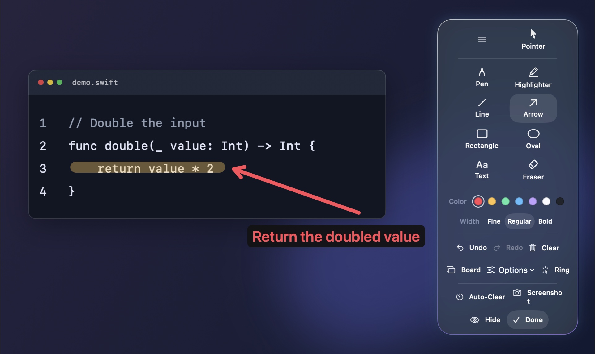
Quick start
-
Install and open
Open the DMG, drag ScreenInklet to Applications, and launch it. Look for the pencil icon in the menu bar. Requires macOS 14 or later.
-
Start annotating
Move the pointer to the display you want to mark up. Choose Start Annotation or press Control + Option + Command + I. Select Pen and drag to draw.
-
Switch back and finish
Choose Pointer to use the app underneath while the ink stays visible. Click Done or press the global shortcut to end annotation.
Explore ScreenInklet
See where to find the drawing controls, board, and settings.

Move it
Drag the handle anywhere across your displays. Choose Toolbar Position in the menu bar to snap it to an edge or reset it.
Set your ink
Pick a color and width. Select Text to switch the width controls to text sizes.
Clear automatically
Turn on Auto-Clear to remove ink after 10 seconds of inactivity by default. Use Undo to recover the marks.
Capture the display
Click Screenshot to copy the annotated display. Paste it with ⌘V. macOS may ask for screen recording permission.
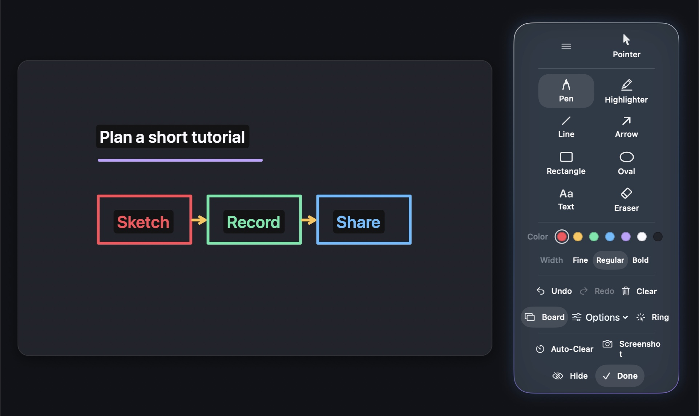
Sketch on a separate board
Click Board to switch from your screen to a separate canvas. Open Options to choose a horizontal or vertical page and a dark or white background.
Return to your screen
Click Board again to return to your screen annotations. Your board keeps its marks for the current session. When Auto-Clear is on, the board has its own timer.
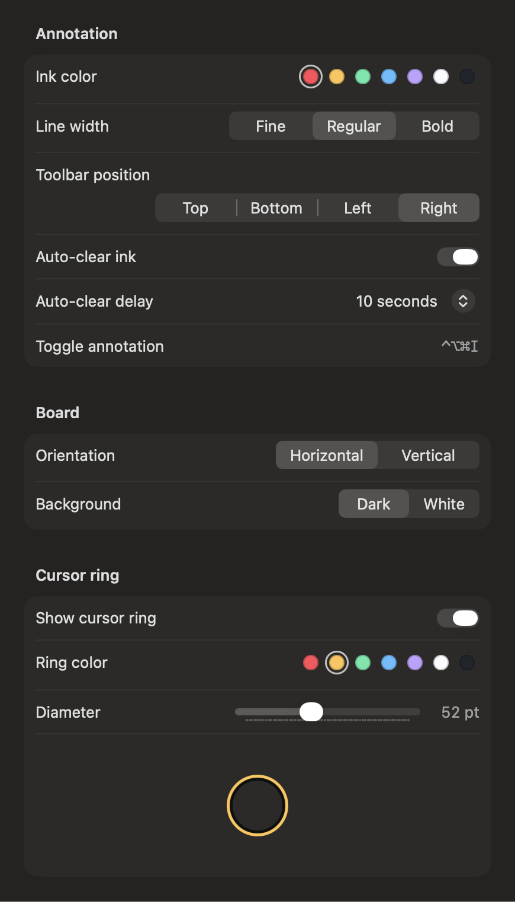
Change the Auto-Clear delay
Open Settings from the menu bar to choose a delay of 5, 10, 30, or 60 seconds.
Highlight the pointer
Use Ring in the toolbar or Cursor Ring in the menu bar. Set the color and diameter in Settings. The ring can stay on between annotation sessions.
Bring back the toolbar
Use Hide for a clear view and Show Toolbar in the menu bar to restore it.
Practice in your browser
Mark up the sample code, change ink colors, and try Auto-Clear before opening the app.
Practice canvas
func double(_ value: Int) -> Int {
return value * 2
}Drag across the code to draw a freehand mark.
Drawing tools in action
Choose a tool to see what it looks like on the screen and how to use it.
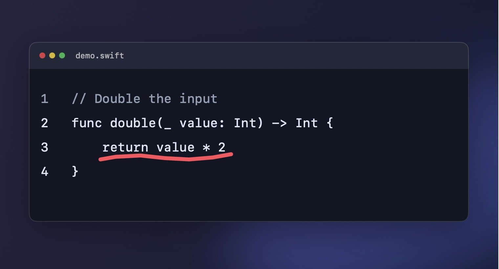
Draw a freehand underline
Select Pen, choose an ink color, and drag beneath the line you want to call out. The mark follows your pointer as you draw.
Highlight readable text
Select Highlighter and drag across a line of text. Use the Bold width to cover a taller line.
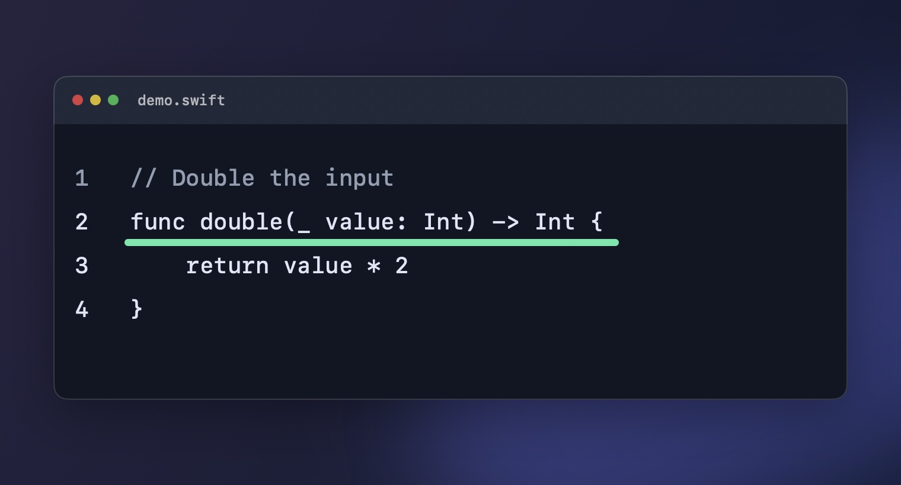
Make a straight underline
Select Line, click where the underline should start, and drag to its endpoint. ScreenInklet draws a straight line between those points.
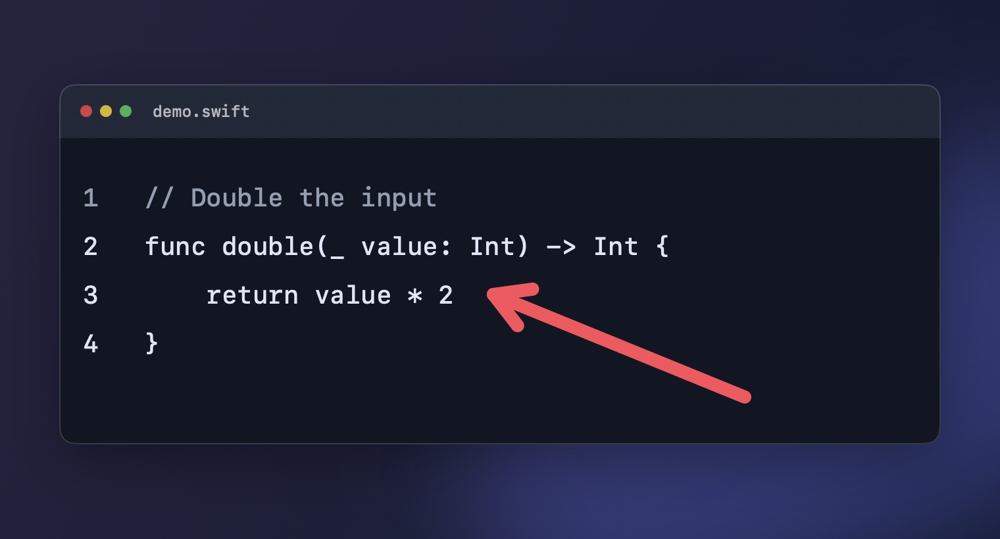
Point to a detail
Select Arrow. Start in nearby empty space and drag toward the detail. Release where you want the arrowhead to land.
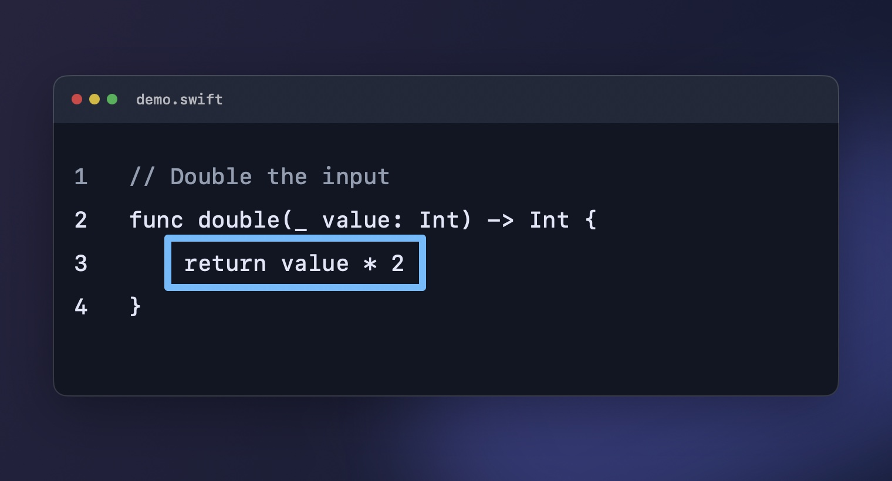
Frame a line or region
Select Rectangle and drag from just outside one corner of the area to the opposite corner. Leave a little space around the content so the outline stays clear of the text.
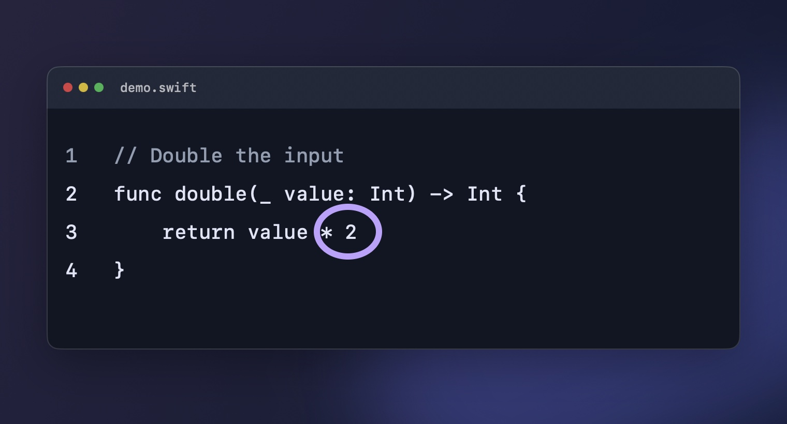
Circle a small detail
Select Oval and drag diagonally between opposite corners of an imaginary box around the detail. The oval fits inside that box.
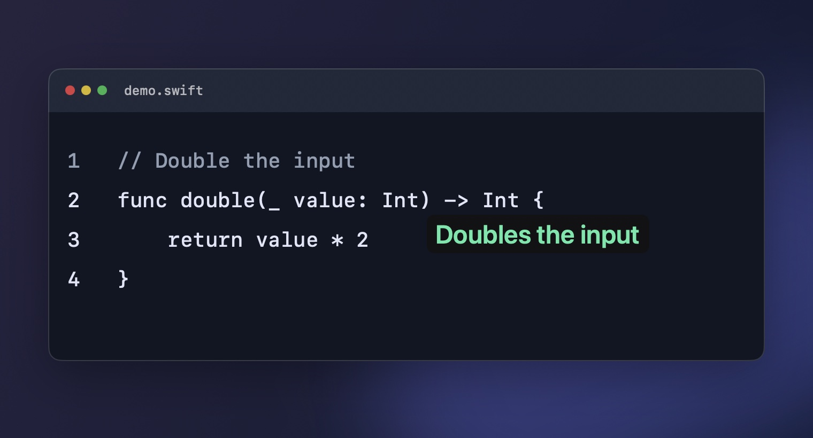
Add a label
Select Text, choose a size, and click where the note should appear. Type your label and press Return to place it or Escape to cancel.
Remove an individual mark
Select Eraser and drag over the mark you want to remove. Here the underline disappears and the arrow stays. Use Clear to remove all marks on the current canvas, ⌘Z to undo, or ⇧⌘Z to redo.
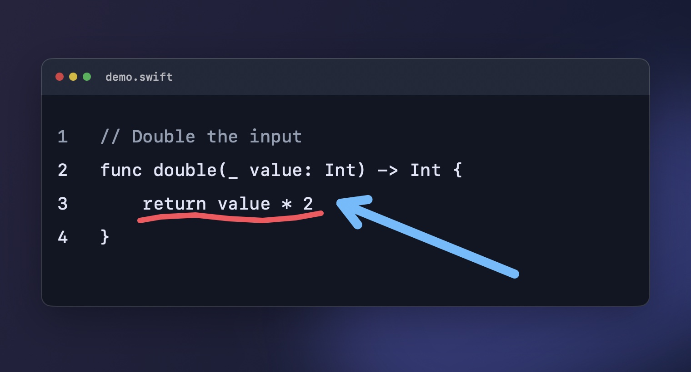
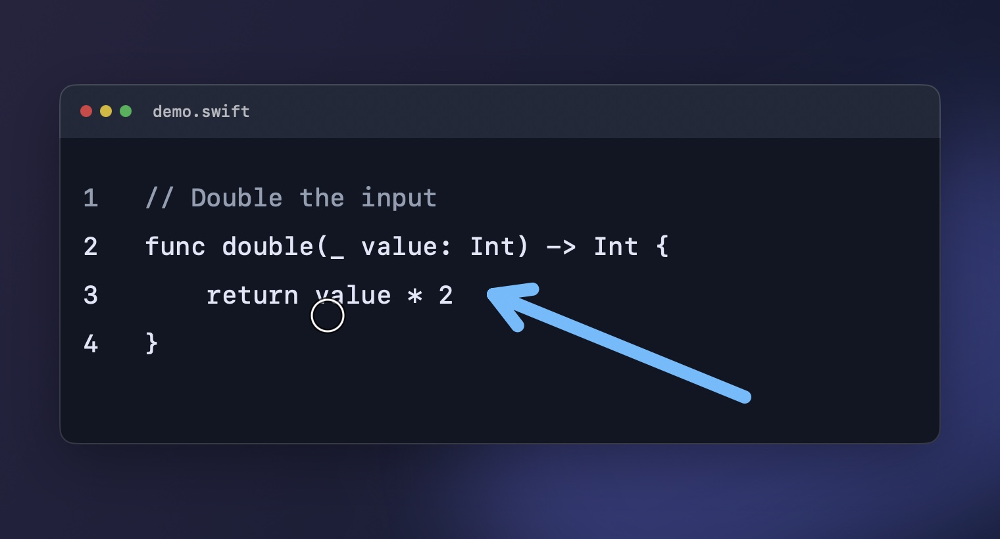
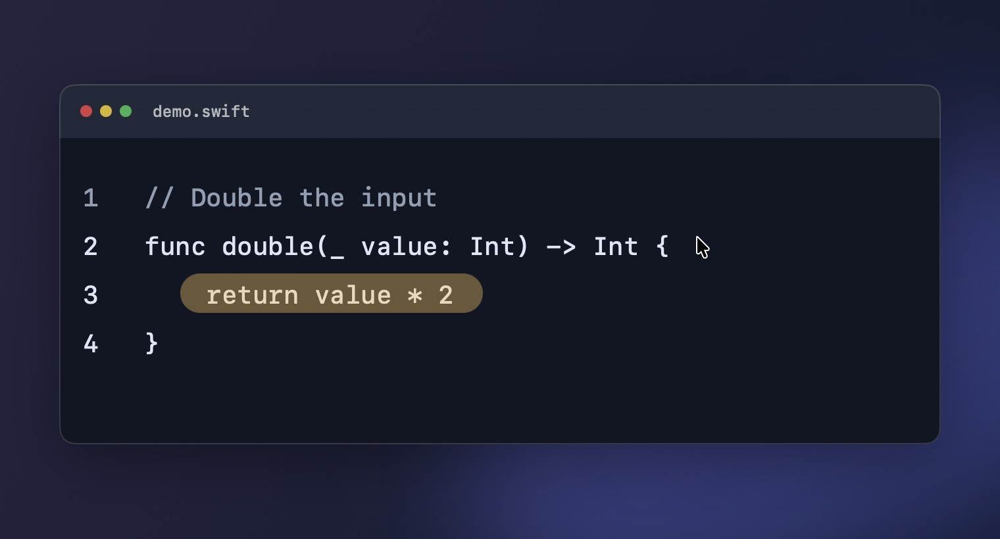
Use the app underneath
Select Pointer to click, scroll, or select content in the app underneath. The ink stays visible. Choose a drawing tool when you want to add another mark.